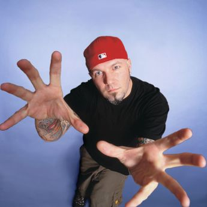

Here is a summary of my favorite story:
"The Jedi are spread across the galaxy in a full-scale war against the Separatists. The Jedi Council dispatches Jedi Master Obi-Wan Kenobi on a mission to defeat General Grievous, the head of the Separatist army and Count Dooku's former apprentice, to put an end to the war. Meanwhile, after having visions of his wife Padmé Amidala dying in childbirth, Jedi Knight Anakin Skywalker is tasked by the Council to spy on Palpatine, the Supreme Chancellor of the Galactic Republic and, secretly, the Dark Lord of the Sith Darth Sidious. Sidious manipulates Anakin into turning to the dark side of the Force and becoming his apprentice, Darth Vader, with wide-ranging consequences for the galaxy."
Here are some images that I like:



Go Back To My Home Page
Go To The "Contact Us" Page